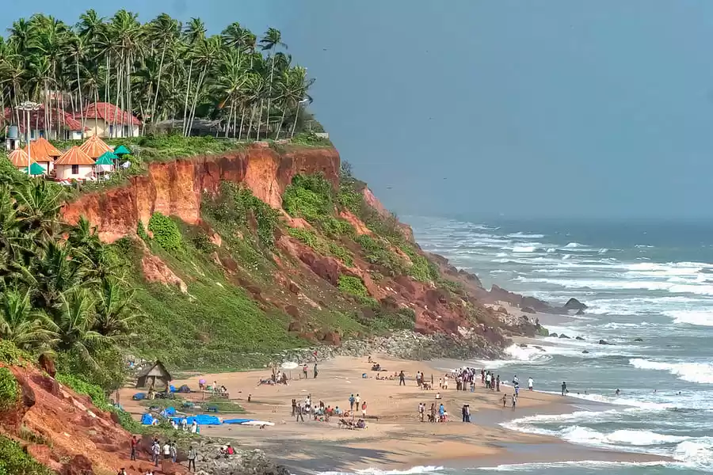
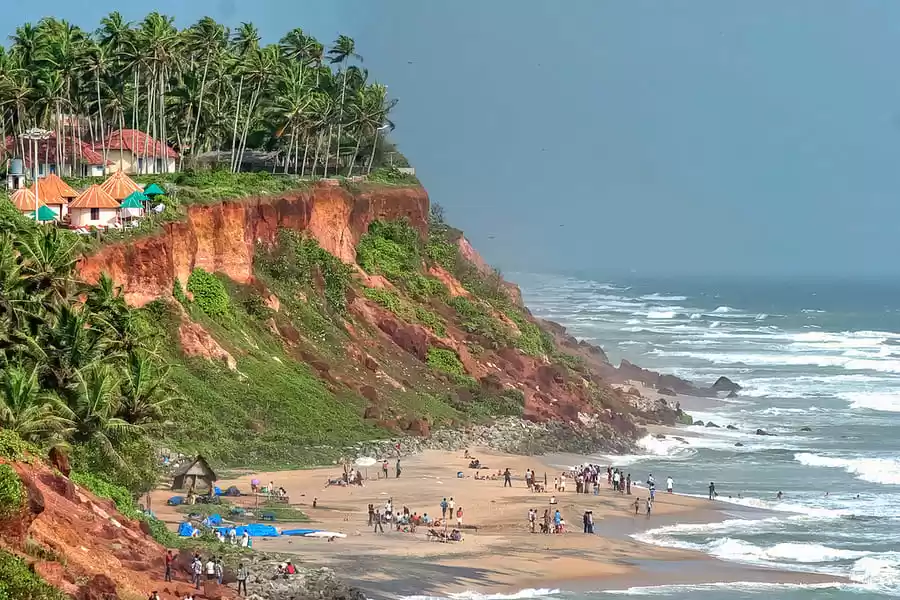
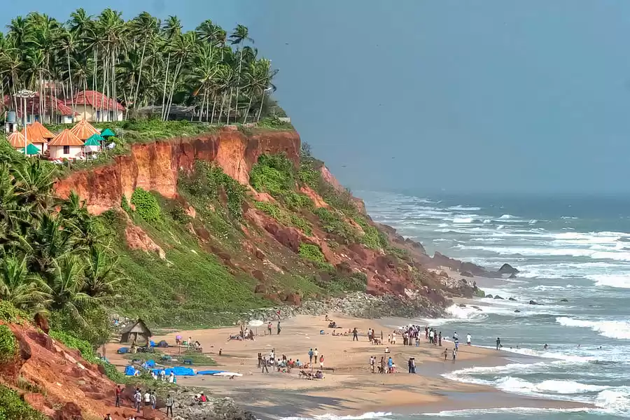

Varkala Beach, also known as Papanasham Beach is a beach situated in Varkala Town of Varkala Municipality in Thiruvananthapuram district, Kerala, India. The beach skirts the Arabian Sea, part of the Indian Ocean.Varkala beach is the only place in southern Kerala where cliffs are found adjacent to the Arabian Sea. These cliffs are of tertiary sedimentary formation and named by geologists as Varkala Formation. They are a geological monument as recorded by the Geological Survey of India. Water spouts and spas occur on the sides of these cliffs.The Janardana Swami Temple is situated near the Beach. It is known for a 10-day festival held twice a year, called Arattu. Sivagiri Mutt is another attraction, located atop the Sivagiri hill. Train service is available at Varkala Sivagiri Railway Station. Varkala beach has adventure and leisure activities such as boat riding, parasailing, jetting, and horse-riding. There are also restaurants and cafes; alcohol is not served!.
